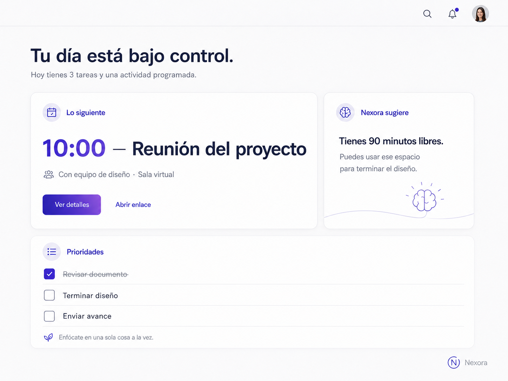

Organización de tareas
Reúne actividades, prioridades y pendientes en un mismo espacio.
MVP EN CONSTRUCCIÓN
NEXORA es una propuesta de asistente personal de organización que ayuda a convertir tareas, ideas y objetivos en planes claros, prioridades y siguientes acciones.
El MVP presenta cuatro servicios conceptuales que después podrán convertirse en funciones reales.
Reúne actividades, prioridades y pendientes en un mismo espacio.
Convierte una idea general en objetivos, etapas y acciones concretas.
Conserva conceptos, decisiones y cambios como un historial evolutivo.
Facilita decidir qué hacer ahora sin saturar al usuario con información.
Esta versión muestra la lógica que seguirá la experiencia del usuario.
El usuario registra una tarea, una idea, una duda o un objetivo.
NEXORA identifica si corresponde a estudio, proyecto, código o archivo.
La información se divide en prioridad, componentes y acciones.
El usuario recibe una siguiente acción concreta y fácil de ejecutar.
PROTOTIPO VISUAL
La pantalla inicial debe reducir el ruido, priorizar la información y guiar al usuario hacia una sola acción importante.

El objetivo del MVP es demostrar una experiencia sencilla: escribir, organizar y avanzar con menos confusión.
Entrar al prototipo